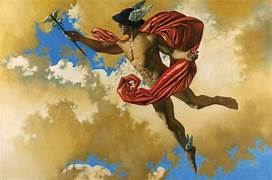

Introdução
Mercúrio é o planeta mais próximo ao Sol e o oitavo em tamanho no sistema solar. A distância média é de 57,9 milhões de quilômetros do Sol. É basicamente constituído por ferro, sendo chamado por Iron Planet. Pode ser visto da Terra a olho nu em dois momentos do dia, pouco antes do amanhecer e instantes após o anoitecer, pois sua proximidade com o Sol dificulta a observação.
Dados Gerais
| Informações | |
|---|---|
| Diâmetro equatorial | 4.879 km |
| Área da superfície | 7,5 X 107 km² |
| Massa | 3.302×1023kg (330 bilhões de bilhões de toneladas).km² |
| Distância do Sol | 5.791×107 km |
| Satélite natural | não possui |
| Período de rotação | Aproximadamente 59 dias |
| Período de translação | Aproximadamente 88 dias |
| Temperatura média | 179 ºC |
| Composição atmosférica | Hélio, sódio e oxigênio |
Características
Mercúrio é um planeta que não possui uma inclinação semelhante à da Terra. Sem essa inclinação e com uma translação curta, não há existência de estações do ano. Essa baixa inclinação explica também o gelo encontrado nas crateras desse planeta. Segundo os estudos da sonda Messenger, o fato de não estar bem inclinado em relação ao Sol faz com que a iluminação não atinja o fundo das crateras, possibilitando a formação de gelo durante a noite."
Sua composição atmosférica é instável e fraca quando comparada com a nossa. A proximidade com o Sol faz com que Mercúrio sofra com os ventos solares, dificultando a presença de atmosfera, satélites naturais e anéis. Com isso, o planeta é suscetível aos meteoros, que constantemente se chocam com o planeta, abrindo enormes crateras
A estrutura física de Mercúrio também chama a atenção. Os estudos das sondas indicam que o núcleo do planeta seja maior do que o da Terra, correspondendo a 75% de Mercúrio. Isso é bem desproporcional, haja vista que se trata do menor planeta do Sistema Solar, mas com um núcleo de quase 4000 quilômetros de diâmetro.
Uma das possíveis explicações é que Mercúrio era um planeta enorme, localizado bem distante de onde está hoje, há bilhões de anos. Com seu movimento orbital, foi sendo transportado para próximo do Sol. Durante esse “transporte”, choques com outros corpos celestes afetaram sua estrutura, diminuindo sua massa rochosa. Esse passado turbulento também pode ajudar a explicar a densidade de Mercúrio, que é o segundo planeta mais denso do Sistema Solar, atrás apenas da Terra.
Em 2018, uma terceira sonda espacial partiu em busca de mais respostas sobre Mercúrio, a sonda BepiColombo, cuja parceria se deu entre a agência espacial europeia ESA e a agência japonesa JAXA. A expectativa é conhecer ainda mais o menor planeta do Sistema Solar.

Mercúrio na cultura
O nome do planeta Mercúrio está relacionado às figuras mitológicas. Na Grécia, Mercúrio era conhecido por Hermes, sendo que o nome Mercúrio tem origem romana. Seu significado está relacionado com a velocidade, já que Mercúrio era considerado um mensageiro dos deuses, e, em razão da sua velocidade, fazia com que as mensagens chegassem muito rápido aos seus destinatários. Esse nome justifica-se pela capacidade física de Mercúrio realizar, muito rapidamente, um movimento em torno do Sol.
Na astrologia, Mercúrio é o planeta da comunicação, sendo um planeta pessoal. Os signos que recebem com mais intensidade as vibrações do planeta, e, por isso, geram nativos que se comunicam bem, são inteligentes e conseguem se manifestar de forma agradável sendo eles, os signos de Gêmeos e Virgem.
Curiosidades
- Uma viagem da Terra à Mercúrio levaria cerca de 2.750 horas ou cerca de 115 dias usando a velocidade média de uma espaçonave em órbita da Terra.
- Mercúrio pode ser visto a olho nu do planeta Terra, porém essa observação tem que ser feita ao início da manhã e ao final da tarde, já que a luz do Sol ofusca o planeta.
- O núcleo do planeta ocupa 75% de toda a sua massa
- Em toda a história espacial, três sondas já visitaram Mercúrio: Mariner 10, em 1975;
Messenger, em
2004; e BepiColombo, em 2018.
Os anos citados foram os anos em que as sondas saíram da Terra. - Não há indícios de placas tectônicas em Mercúrio